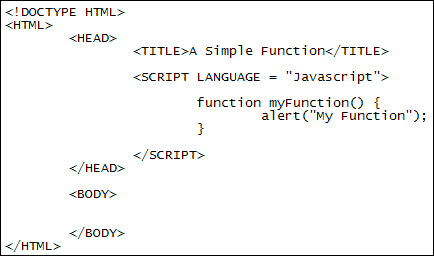
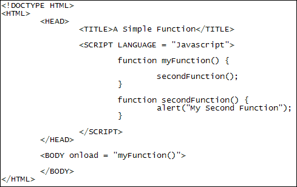

Javascript Functions
The scripts we have at the moment are set to run as soon as the page loads in the browser. But they don't have to. A better way is to put the code inside something called a function. A function is just a separate code segment that you call into action. In fact, they don't do anything unless you do call them into action. Let's see how they work.
A function without any code looks like this:
function myFunction() {
}
You start with the word function (lowercase "f"). After a space you type a name for your function. Function names are just like variable names in that you can call them anything you like. But they can't start with a number; you can't have spaces in the name; and the variable should contain only letters, numbers ( but not the first character of the variable), a dollar sign ($) or an underscore ( _ ).
After your function name you need a pair of round brackets. The round brackets are for something called arguments, which we'll get to shortly.
Finally, you need a pair of curly brackets. Any code you want to execute goes between the two curly brackets.
You don't need to spread your functions out over multiple lines, however. This is perfectly valid:
function myFunction() { alert("My Function"); }
But your code will be easier to read if your functions aren't all on one line.
To test functions out, create a new web page. You can use the template you created in an earlier section. In between two SCRIPT tags, add the following:
function myFunction( ) {
alert( "My Function" );
}
Your web page code should look like this:

Now load your web page into a browser. You should find that nothing happens: the alert between the two curly brackets of the function doesn't display.
The reason the alert doesn't display is because the function hasn't been called into action. There are lots of ways to call a function. One way is via the onLoad event of the browser window. So add this to the BODY section of you HTML:
<BODY onLoad = "myFunction()">
After the word onLoad we have an equal sign (it doesn't have to be capital "L", by the way - we've done it like this for readability's sake). This is followed by the name of the function we created, the one we want to call. The name of the function is best placed between double or single quotes because some browsers won't work without quotes surrounding your function name. As well as the function name, you need the round brackets.
Save your changes and refresh the page in your browser. You should find that the alert box now displays - the function has been called into action!
Functions calling other functions
One function can also call another into action. You don't want one giant function that does everything, so the standard practice is to have lots of smaller ones doing specific things. Suppose you had a function that gets values from a form when a button is clicked. You may then want to set up other functions that check things like an email text box to see if the address is valid, or to see if a check box has been ticked. The point is that breaking your code down into separate segments that do specific jobs (functions) makes life easier for you as a coder.
As a simple example of one function that calls another, take a look at the following code:

So we've added a second function to the code we had before. This is the function we've added:
function secondFunction() {
alert("My Second Function");
}
The code between the curly brackets of the function is just an alert box. Now have a look at the first function:
function myFunction() {
secondFunction();
}
We no longer have the alert box inside the first function. What we have is this:
secondFunction();
To call a function into action, then, all you need to do is to type the function name, and its round brackets, ending the line with a semicolon.
Try it out for yourself. When you load the page in a browser, the BODY onLoad call is the first thing to happen. This activates myFunction. When myFunction gets executed, it calls secondFunction into action.
Return values
Quite often, you'll want to get something back from your functions. If you're examining an email address for errors, you'd want to get back the results from your code (is it a valid email address or not). Or if you have a check box asking user to agree to your terms and conditions, you'd want the answer back from your function. This value that you want to get back is called the return value in Javascript. The return value can be a string of text, a number, a Boolean value, or even objects. But they only return one value. Let's adapt our second function so that it returns a value.
function secondFunction() {
var alertString = "My Return Value";
return alertString;
}
In this simple example, we've set up a variable called alertString. We've set this value to be the text "My Return Value". To get this value out of the function, we have this line:
return alertString;
To get a value out, you type the word return followed by a space (not an equal sign). Next you type the variable name or the value (true or false, for example) that you want to get back. For us, this was the variable called alertString.
But we need to adapt the first function to get at this value. Study this new version of the first function:
function myFunction() {
var retVal = secondFunction();
alert( retVal );
}
This is the important line:
var retVal = secondFunction();
We still have the function call. But this time it's on the right hand side of an equal sign. A single equal sign is the assignment operator, remember. So we're assigning a value to the variable on the left of the equal sign. The value we're assigning is whatever we get back from the function called secondFunction.
So bear that in mind: if you want to return a value from a function, assign it to a variable on the left of an equal sign.
After we get the value back from the function, we can do other things with it. In our simple example, we're just displaying the value in an alert box.
In the next part, you'll learn about function arguments.